언제부터 운동은
기능이 아닌 패션이 되었을까?
“운동 좀 하세요?”라는
질문의 답은 시대마다 달랐다.
질문의 답은 시대마다 달랐다.
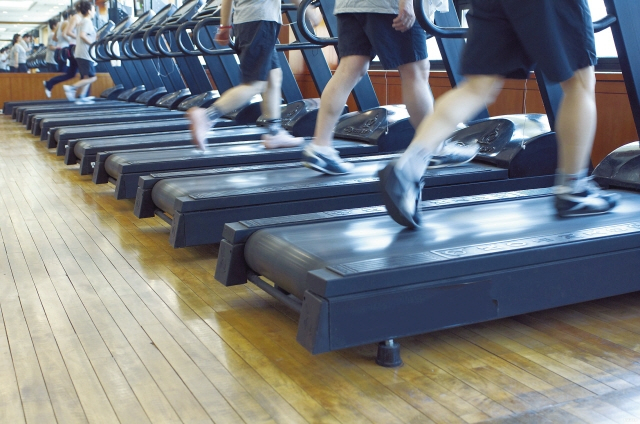
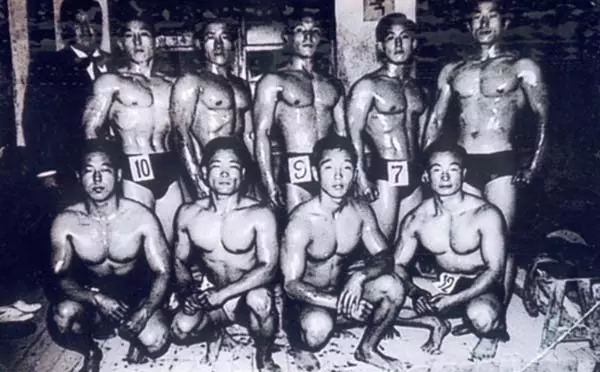

1950–1960s
1970–1980s
1990s
건강은 단련이었다
전쟁 이후 건강은 강한 몸을 만드는 것이었다.
운동은 체력과 생존을 위한 훈련에 가까웠다.
전쟁 이후 건강은 강한 몸을 만드는 것이었다.
운동은 체력과 생존을 위한 훈련에 가까웠다.
건강은 국민운동이었다
건강은 개인이 아닌 사회 전체의 과제였다.
국민체조와 에어로빅이 대중화되며 운동이 일상으로 들어오기 시작했다.
건강은 개인이 아닌 사회 전체의 과제였다.
국민체조와 에어로빅이 대중화되며 운동이 일상으로 들어오기 시작했다.
건강은 몸매 관리가 되었다
헬스클럽이 확산되고 다이어트 열풍이 시작됐다.
건강은 체력보다 외형 관리와 연결되기 시작했다.
헬스클럽이 확산되고 다이어트 열풍이 시작됐다.
건강은 체력보다 외형 관리와 연결되기 시작했다.
건강은 삶의 질이 되었다
웰빙 열풍과 함께 건강은 운동을 넘어 라이프스타일로 확장됐다. 몸과 마음의 균형이 중요한 가치가 되었다.
웰빙 열풍과 함께 건강은 운동을 넘어 라이프스타일로 확장됐다. 몸과 마음의 균형이 중요한 가치가 되었다.
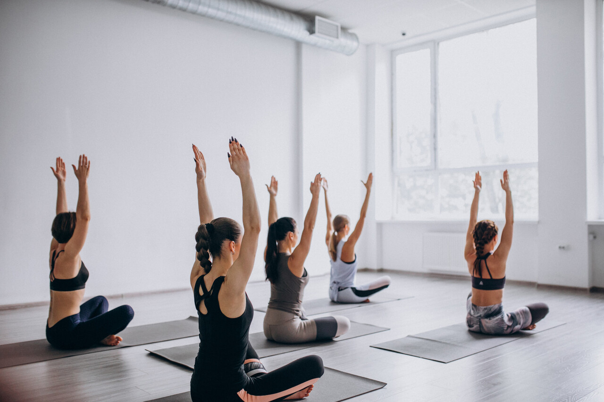
2000s
건강은 운동을 넘어
삶이 되었다.
삶이 되었다.
“
”
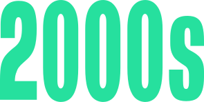
웰빙(Well-being):
신체적·정신적·
사회적으로
건강한 삶
신체적·정신적·
사회적으로
건강한 삶
요가와 필라테스가 대중화되고, 편안한 애슬레저 웨어(츄리닝)가 일상복이 되었다. 유기농, 건강식 들 먹거리에 대한 관심도 함꼐 폭발적으로 증가했다.
#월빙 #츄리닝 #건강식 #행복
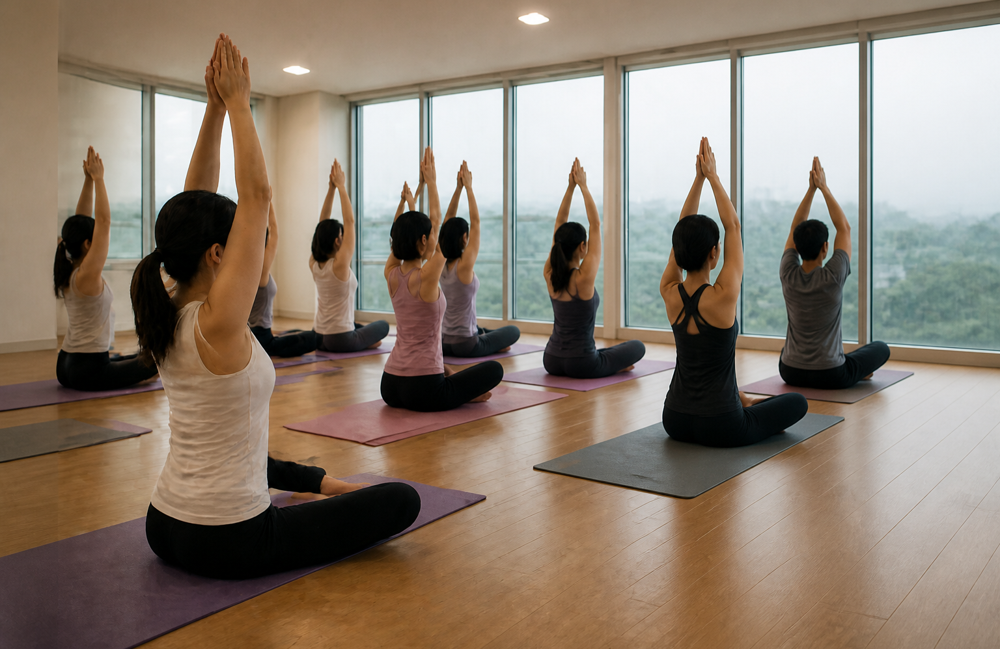
2000년대 웰빙 문화의 등장과 함께 건강은
더이상 운동만을 의미하지 않았다.
사람들은 무엇을 먹는지,
어떤 옷을 입는지,
어떻게 쉬는지까지
건강의 일부로 생각하기 시작했다.
더이상 운동만을 의미하지 않았다.
사람들은 무엇을 먹는지,
어떤 옷을 입는지,
어떻게 쉬는지까지
건강의 일부로 생각하기 시작했다.
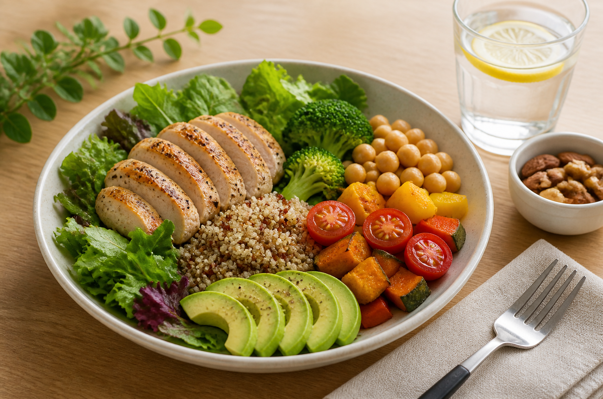
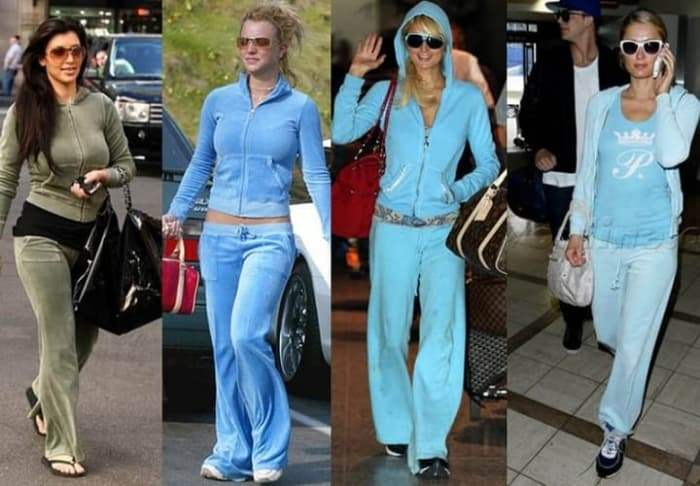
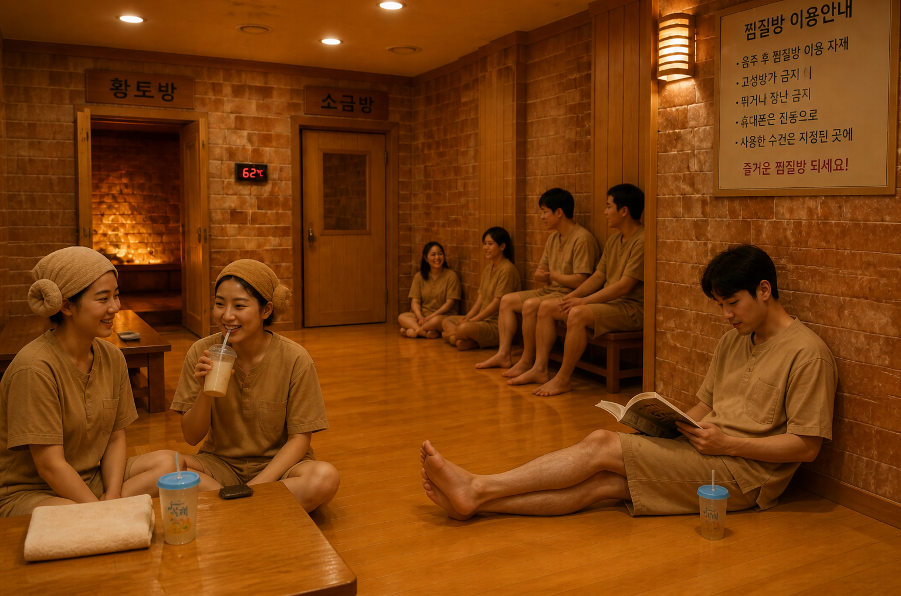
건강은 공유되기
시작했다
시작했다
SNS와 스마트폰의 확산은 건강을 기록하고 공유하는 문화로 바꾸었다.
러닝 기록, 바디프로필, 오운완, 운동 인증 문화가 등장하며 건강은 관리의 영역에서 표현의 영역으로 이동했다.
러닝 기록, 바디프로필, 오운완, 운동 인증 문화가 등장하며 건강은 관리의 영역에서 표현의 영역으로 이동했다.
#오운완 #바디프로필 #패션러닝
#애플워치
#애플워치
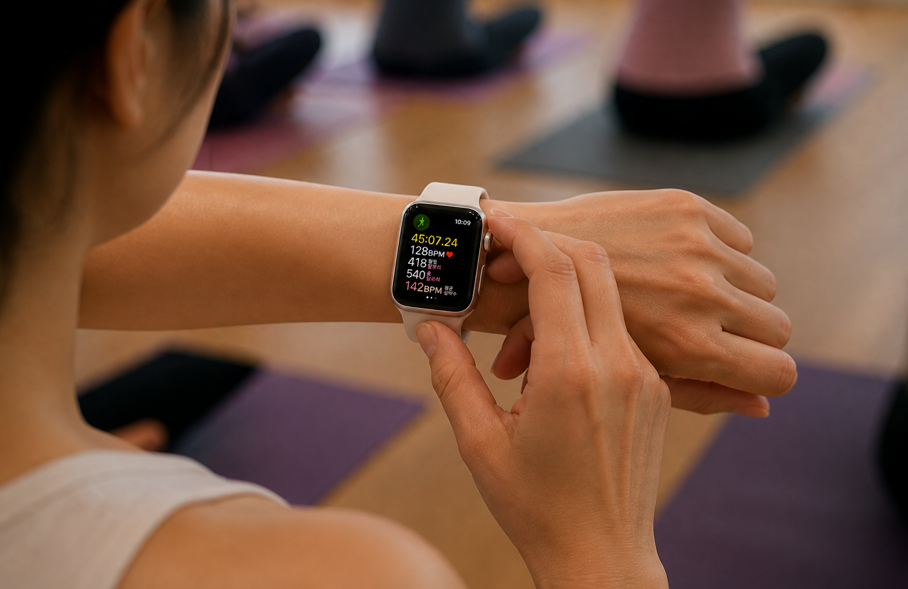
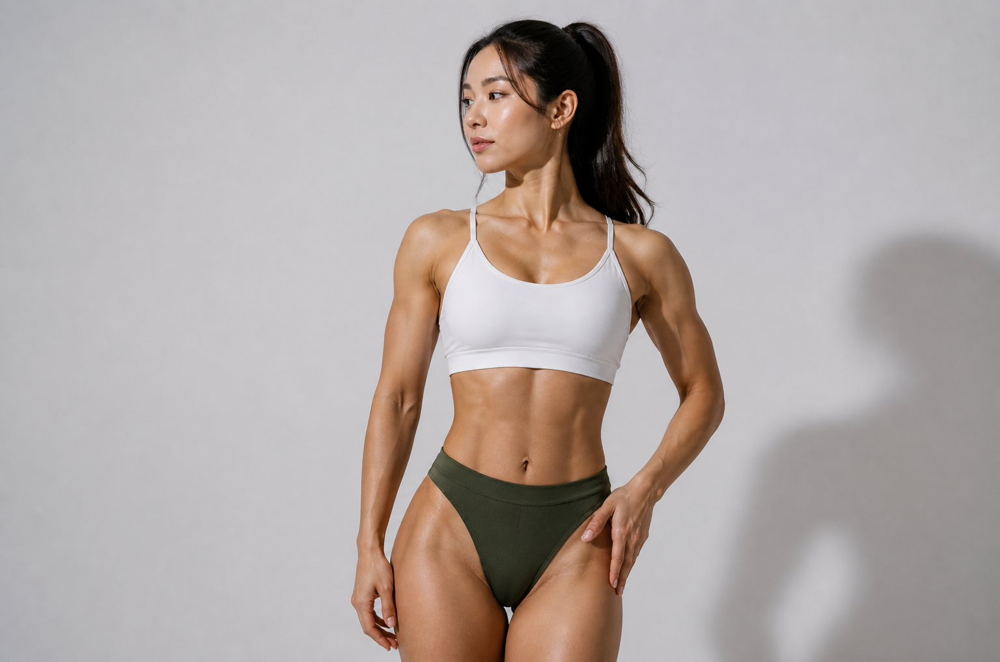
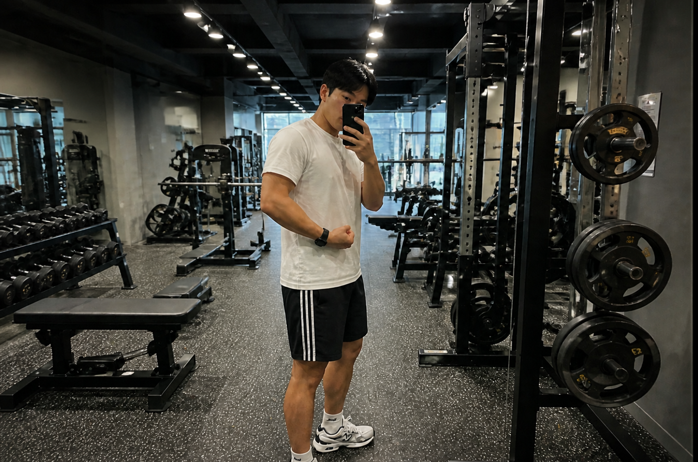
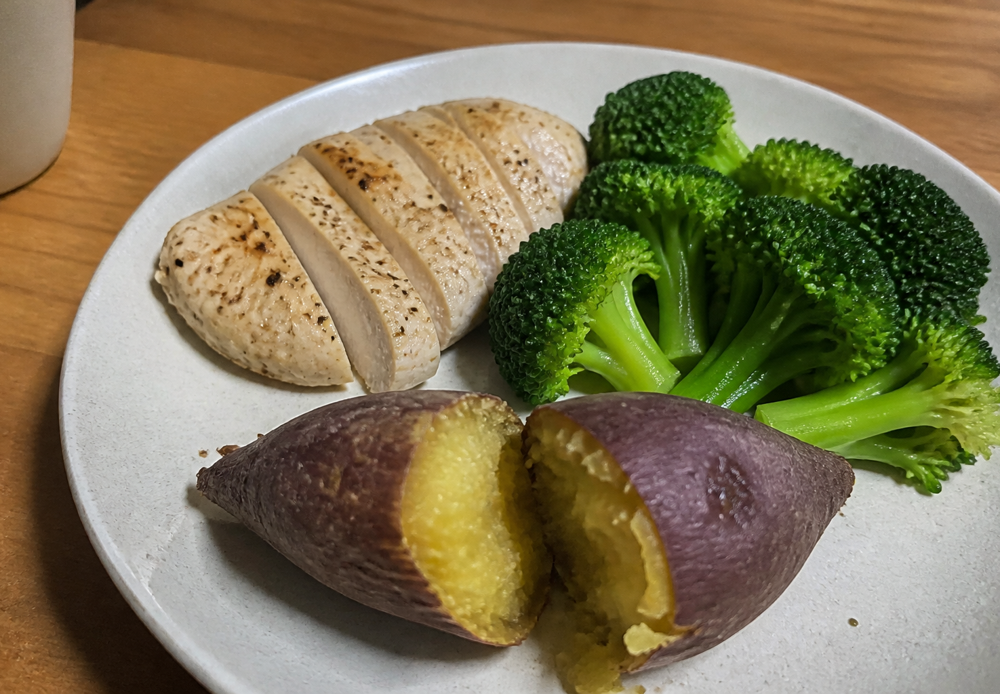
건강은 취향이 되었고, 취향은 산업이 되었다
러닝은 패션을 만들고, 웰빙은 먹거리를 바꾸고, 웰니스는 뷰티 산업까지 확장되었다.
하나의 문화가 새로운 시장을
만들기 시작했다.
하나의 문화가 새로운 시장을
만들기 시작했다.
#라이프스타일산업 #헬스케어 #이너뷰티 #개인화
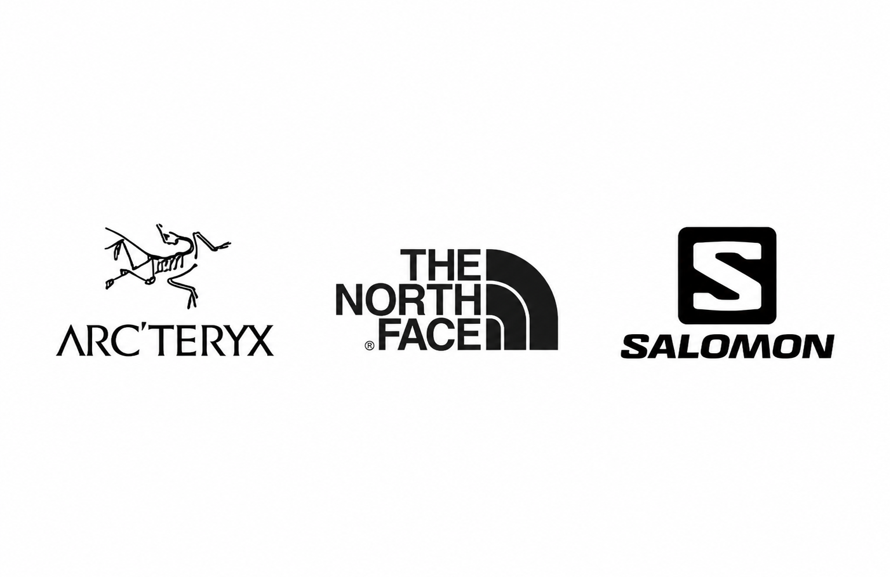
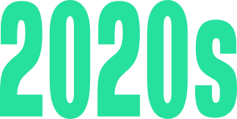
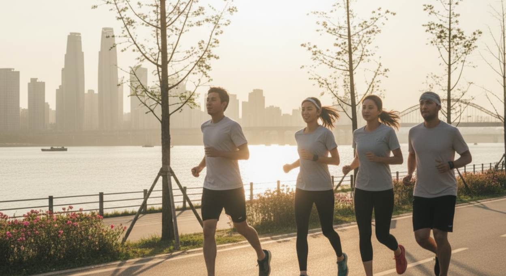
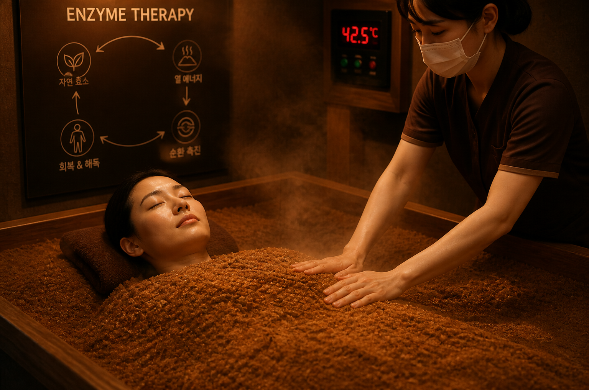
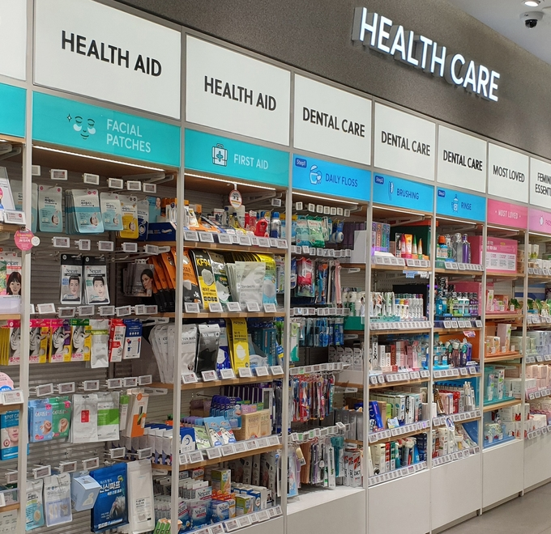